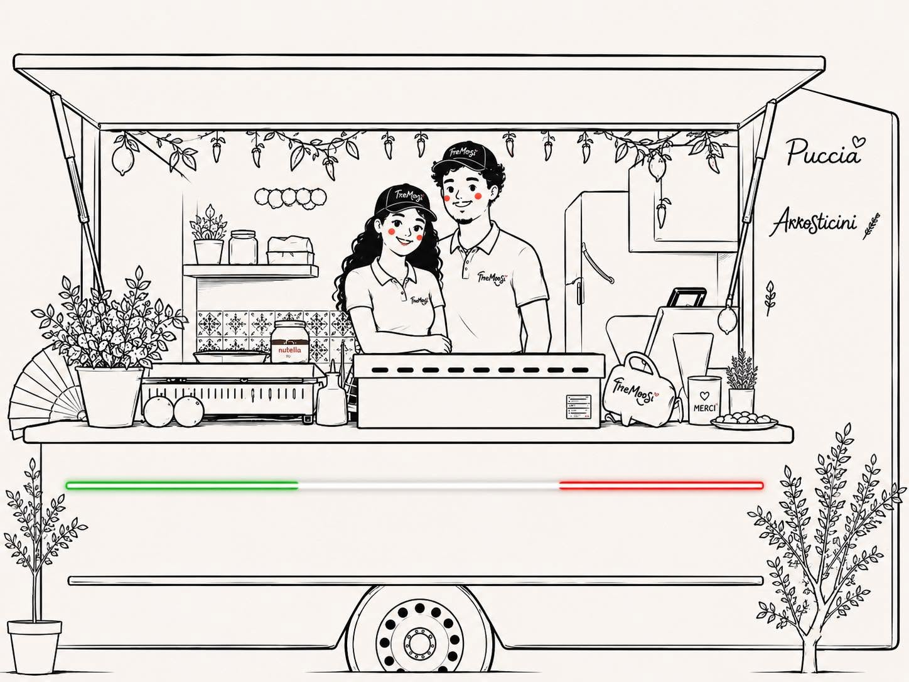
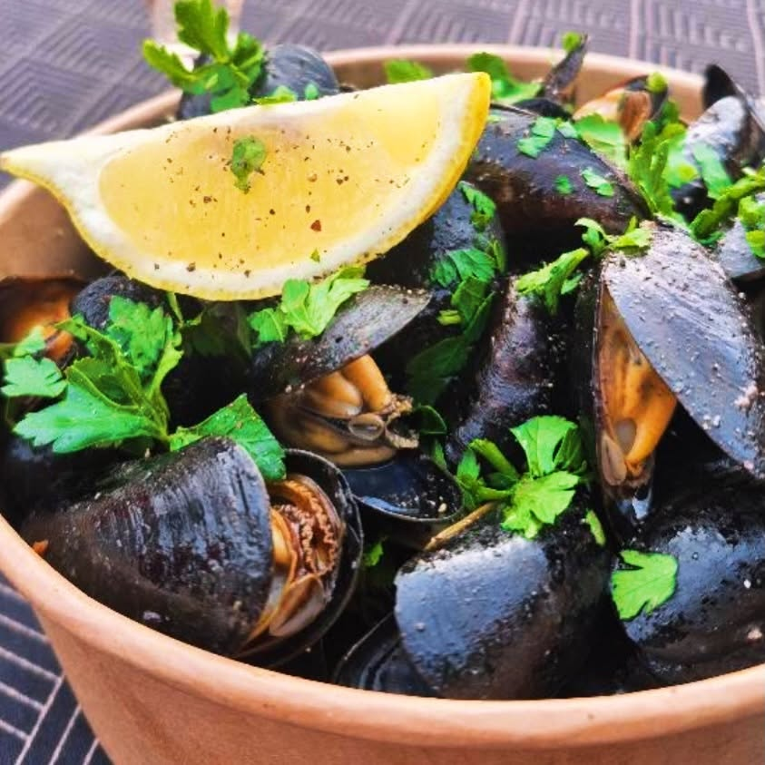
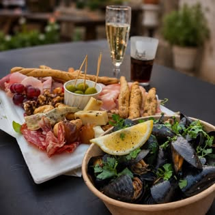
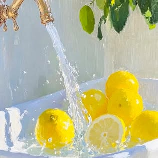
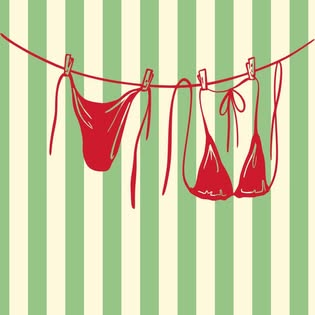

La Mer cozze & puccia del sud
Les moules au citron et persil, la puccia dorée des Pouilles : le sud de l’Italie dans un bol en carton, les pieds dans l’eau.
🚚 Food truck italiano · Fleurus — Charleroi & alentours
« Ogni morso racconta l’Italia » ✦ chaque bouchée raconte l’Italie
Arrosticini grillés à la braise, puccia dorée, cozze au citron — des produits authentiques préparés avec passione e am♥re. La dolce vita, servie à votre coin de rue.

« Tre Mor Si », c’est trois bouchées : la mer, le soleil et le vent d’Italie. Des Abruzzes aux Pouilles, on ramène le meilleur de la strada italienne jusqu’en Belgique.
Les moules au citron et persil, la puccia dorée des Pouilles : le sud de l’Italie dans un bol en carton, les pieds dans l’eau.
Citrons, produits choisis avec soin et recettes de famille : tout est preparato con passione — et ça se goûte.
Les célèbres brochettes des montagnes des Abruzzes, grillées à la braise sous vos yeux. Simples, fumées, addictives.
Basé à Fleurus, le truck bouge toute la semaine entre Charleroi et ses alentours. L’agenda en temps réel est toujours sur Instagram et Facebook.

cozze al limone 🌊
aperitivo time 🥂
il sole in cucina ☀️
dolce vita 🏖️Taguez-nous avec #tremorsi — les plus belles photos finissent ici ! 📸